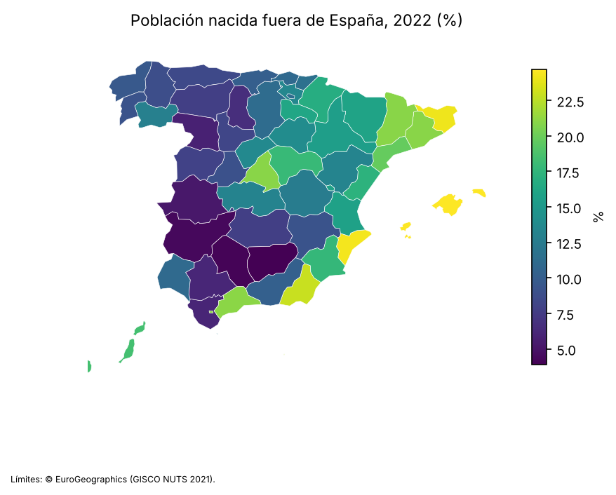
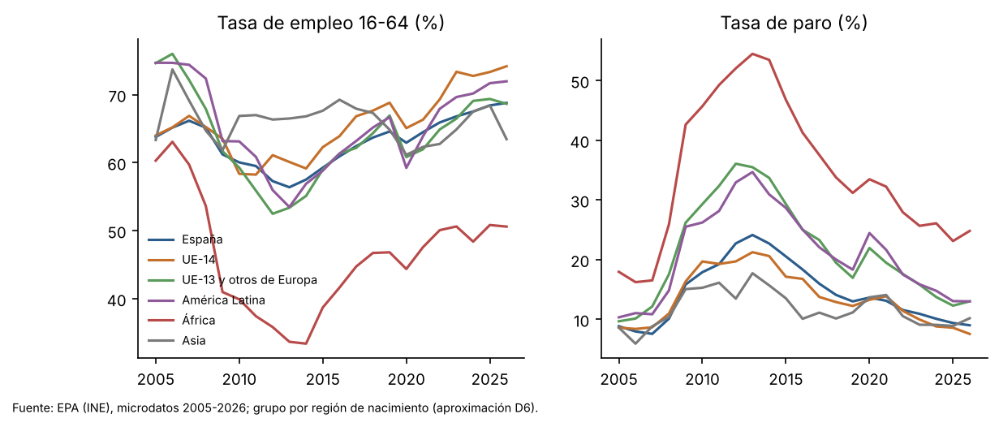
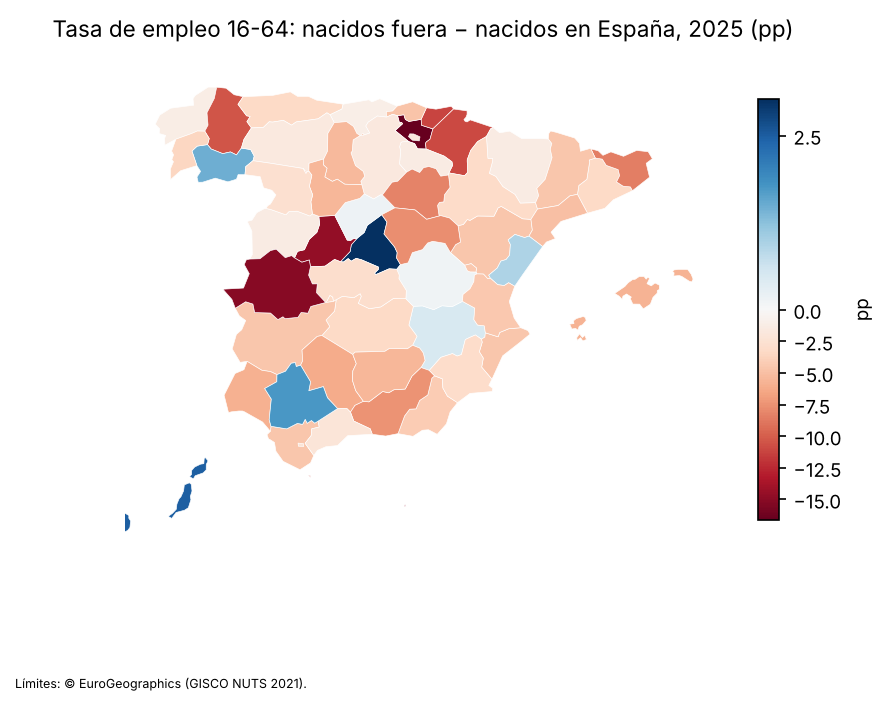
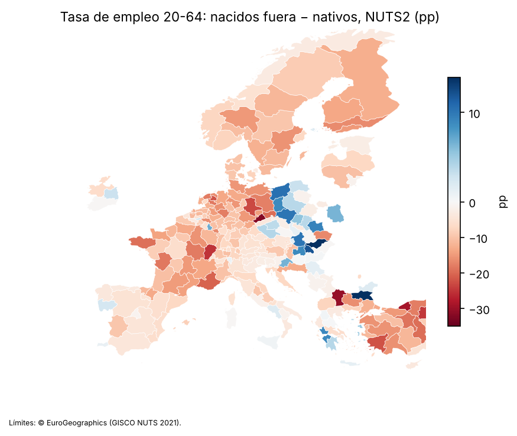
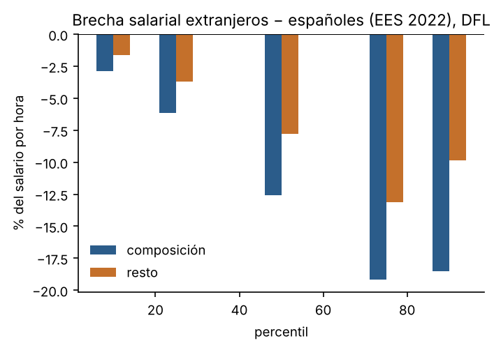
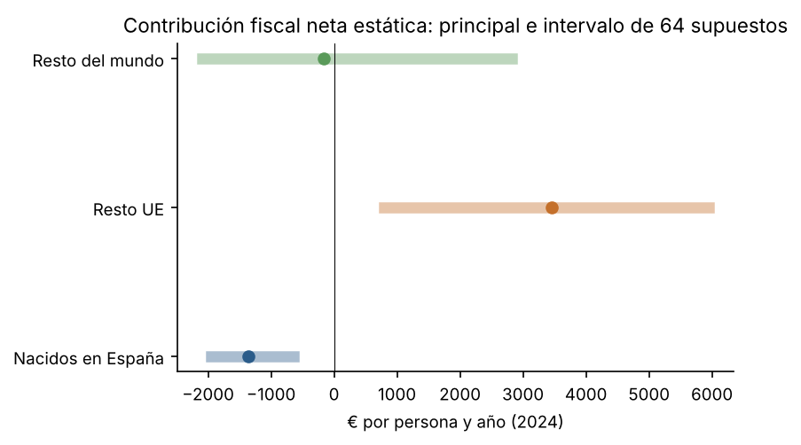
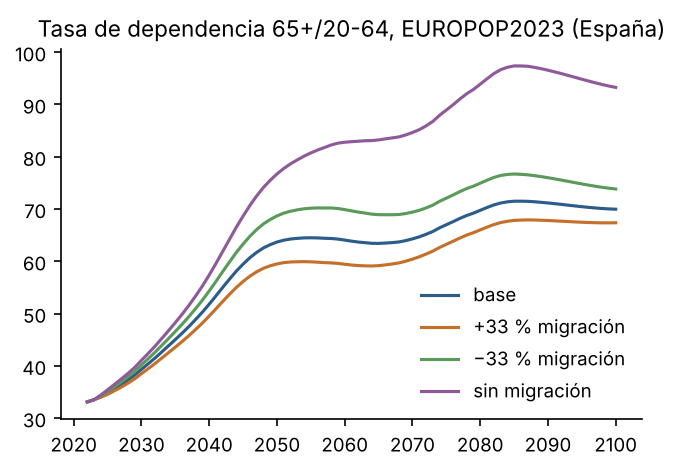

España por provincia y Europa por país y región, solo con información pública
Documento de trabajo M1 · octubre de 2026 · Formato de la serie Documentos de Trabajo del Banco de España; no es una publicación del Banco de España ni ha pasado por su revisión.
Pregunta. El estudio separa dos preguntas que no se mezclan. La primera es la contribución, una pregunta de contabilidad: cuánto aporta y recibe cada grupo de origen en empleo, salarios, vivienda y cuentas públicas. La segunda es el impacto, una pregunta de identificación: qué efecto tiene la inmigración sobre la población local. Solo se usan datos públicos descargables sin solicitud.
Población. La población nacida fuera de España era el 15,9 % en el padrón de 2022 y el 19,3 % en la Estadística Continua de Población de 2025. En 1998 era el 2,9 %. En la UE-27 la cifra es del 14,4 % (Eurostat, que para España se basa en la misma estadística del INE). Es una población más joven: el 9,2 % tiene 65 o más años, frente al 23,5 % de los nacidos en España.
Empleo. En 2025 la tasa de empleo de 16 a 64 años es del 67,3 % entre los nacidos fuera y del 68,4 % entre los nacidos en España; a 25-54 años, del 73,2 % frente al 82,3 %, y para 16-64 años a igual edad y sexo la brecha es de -5,3 pp. La variación interna es amplia: África 50,8 %, UE-14 73,3 %. El paro es mayor entre los nacidos fuera: 14,0 % frente a 9,4 %. Al aumento de la ocupación entre 2014 y 2025, de 4,9 millones, los nacidos fuera aportan el 55,6 %. Es contabilidad: no dice qué habría ocurrido sin inmigración.
Salarios. Los extranjeros cobran por hora un 18,1 % menos que los españoles (Encuesta de Estructura Salarial, EES, 2022). A igual edad, sexo, estudios y región la diferencia baja al 6,2 % menos (exploratorio, C4). En la descomposición de Oaxaca-Blinder, alrededor del 68,0 % de la brecha media corresponde a diferencias de composición observables.
Vivienda. Vive en vivienda en propiedad el 81,9 % de los nacidos en España, frente al 32,9 % de los nacidos fuera de la UE. La sobrecarga del gasto en vivienda afecta al 26,1 % de los segundos y al 4,9 % de los primeros.
Cuentas públicas. Contribución neta estática en 2024, en euros por persona: escenario principal de referencia e intervalo de las 64 combinaciones de supuestos (capa C2):
Las cifras incluyen el déficit de las administraciones, que se reparte entre todos; con presupuesto equilibrado (criterio de la OCDE) las cifras suben para todos (sección 4). Para el conjunto de nacidos fuera, el signo depende de dos supuestos: con bienes públicos a coste medio y los hijos nacidos en España asignados a sus padres es negativo en todas las combinaciones de los demás supuestos ([-1.515, -670] €), y en las otras tres celdas, positivo. Estas comparaciones son brutas. A igual edad y sexo, la diferencia con los nativos es 239 € para el resto de la UE (positiva en las 64 combinaciones, aunque su intervalo de muestreo contiene el cero) y -1.708 € para el resto del mundo (su intervalo de muestreo no contiene el cero, pero el de supuestos sí: es positiva en las 32 combinaciones con bienes públicos a coste marginal cero). En el último grupo el signo depende del reparto de los bienes públicos y de la asignación de los hijos nacidos en España: el principal es solo una referencia y lo que se afirma es el intervalo (decisión del autor, D11; tablas de signo en output/f4/signo_por_supuestos.csv y output/f4/ciclo_vital_signos.csv). En el ciclo vital (valor actual de por vida, sin convergencia adicional), para los dos grupos de nacidos fuera todas las llegadas entre 20 y 50 años dependen de supuestos; las llegadas a los 0 años son negativas en todos los supuestos, como el valor de un recién nacido en España. Frente a un nacido en España de la misma edad, quien llega de fuera de la UE a los 20 años aporta menos en las 24 combinaciones sin convergencia, y quien llega del resto de la UE a los 50, más; en las demás edades depende de supuestos; con convergencia, la de los 20 años también depende de supuestos y la de quien llega de fuera de la UE a los 50 pasa a ser positiva. Todos los valores incluyen el déficit de 2024 y excluyen a los descendientes.
Pensiones. Con una regla demográfica mecánica, el gasto en pensiones de 2050 de la variante de EUROPOP2023 sin migración es 4,4 puntos de PIB mayor que el de la variante base, y entre las variantes con menos y con más migración la diferencia es de 3,1 puntos. Es una comparación de escenarios con supuestos, no una proyección del sistema ni un efecto estimado. En el Ageing Report 2024, que modeliza empleo y reformas, la diferencia entre un tercio menos y un tercio más de migración es de 2,6 puntos (18,7 % frente a 16,1 %; referencia NO VERIFICADA, sin DOI).
Impacto sobre la población local. La estimación causal se hizo con el diseño pre-registrado (shift-share provincial con cuotas de 1998). Tras corregir un error de código en el control de cuotas incompletas detectado en la revisión (que cambió los signos de las confirmatorias; las tres lecturas del control se publican), la primera etapa es fuerte al nivel del shock (F = 13,5), pero los conjuntos de confianza AKM0 no están acotados. Por las reglas fijadas antes de estimar, ningún efecto queda IDENTIFICADO ni SUGESTIVO: todas las preguntas causales son ASOCIACIÓN o NO ESTIMABLE, y ninguna rechaza el cero con la corrección por multiplicidad. Los datos públicos no permiten afirmar ni descartar un efecto de la inmigración sobre el empleo, los salarios o los servicios de la población local. El indicio más consistente es desfavorable y exploratorio: la tasa de empleo de los nacidos en España con educación baja tiene una estimación de -0,61 puntos por punto, con un conjunto de confianza sin cota inferior, que no supera la corrección por multiplicidad ni el wild bootstrap; estandarizada por edad baja a -0,30 y pierde las señales que la apoyaban, y depende de una sola comunidad. Hay también indicios favorables más débiles, apoyados solo en el placebo de permutación, en el paro y en el empleo de los nativos con educación alta; la variante por nacionalidad y el multiverso no los acompañan (sección 5).
Afirmaciones del debate. Se evalúan doce afirmaciones: de las seis desfavorables a la inmigración, cinco con veredicto «no se puede saber» y una con veredicto «engañosa»; de las seis favorables a la inmigración, cuatro con veredicto «no se puede saber» y una con veredicto «engañosa» y una con veredicto «se sostiene con matices» (sección 7).
Casi una de cada cinco personas que viven en España nació fuera. Entre los 16 y los 64 años su tasa de empleo se parece a la de los nacidos en España, pero en las edades centrales (25-54 años) y a igual edad y sexo trabajan menos, con más paro y empleos más temporales, y con grandes diferencias entre grupos. Cobran menos por hora; unos dos tercios de esa diferencia se corresponden con diferencias de edad, sexo, estudios y región, y el resto no se explica con esas variables. Viven mucho más de alquiler y dedican más parte de su renta a la vivienda.
En las cuentas públicas de un año (2024), los nacidos en otros países de la UE aportan más de lo que reciben en todas las combinaciones de supuestos estudiadas. Para los nacidos fuera de la UE, el resultado depende de cómo se repartan gastos como la defensa o los intereses de la deuda, y de si la educación de sus hijos nacidos en España se les imputa a ellos. Buena parte de esa ventaja corresponde a una estructura por edad más joven: comparados con nativos de la misma edad y sexo, la ventaja de los nacidos en otros países de la UE se reduce mucho, y para los nacidos fuera de la UE el resultado depende de supuestos. Cuando se mira toda la vida (impuestos de hoy y pensiones de mañana), el saldo de quien llega depende de supuestos; frente a un nacido en España de la misma edad, quien llega de fuera de la UE a los 20 años aporta menos a lo largo de su vida en todos los supuestos sin convergencia, y quien llega de otro país de la UE a los 50, más.
Que la inmigración cambie el empleo o los salarios de los nacidos en España es otra pregunta. Con los datos públicos y el diseño fijado de antemano, la respuesta es que no se puede saber: las estimaciones son demasiado imprecisas para afirmar un efecto en cualquier sentido. Hay un indicio, no concluyente, de menor tasa de empleo de los nativos con estudios bajos en las provincias con más llegadas, y otros más débiles en sentido favorable (menos paro y más empleo de los nativos con estudios altos).
Este documento mide la contribución de cada grupo de origen al empleo, a los salarios, a la vivienda y a las cuentas públicas en España (nacional, comunidad y provincia) y en Europa (país y NUTS2). Además prepara, con un pre-registro interno, la estimación del impacto de la inmigración sobre la población local (pregunta B).
Las dos preguntas se responden por separado. La contribución (A) es contabilidad. El impacto (B) exige identificación y solo se describe con lenguaje causal si queda IDENTIFICADO según reglas fijadas antes de estimar. Cada cifra lleva una capa:
Reglas comunes a todo el documento:
Origen. El criterio principal es el país de nacimiento; la nacionalidad es la sensibilidad. Hay ocho grupos: nacidos en España; UE-14; UE-13 y otros de Europa; América Latina; Magreb; resto de África; Asia; resto.
Qué permite cada fuente:
Los nacionalizados son el 33,4 % de los nacidos fuera. La segunda generación solo se identifica si convive con sus padres (EPA, ECV).
El inventario de fuentes, con URL, licencia, fecha y sha256, está en el anexo D y en data/fuentes.csv. Lo que no es público, y qué pregunta afecta, está en la sección 8.
Protección de datos. Solo se publican agregados y se suprimen las celdas con menos de 50 observaciones muestrales. Las encuestas públicas no traen estratos ni conglomerados, salvo la EES (establecimiento), y los errores se agrupan en consecuencia (D7).
La población nacida fuera pasó del 2,9 % en 1998 al 15,9 % en 2022. Por grupos, en 2022: América Latina 7,0 %, UE-13 y otros de Europa 2,4 %, UE-14 2,3 %, Magreb 2,3 %, Asia 1,1 % y resto de África 0,6 %.
Por provincias va del 3,9 % al 24,7 % (mapa 1).
Entre 2021 y 2024 el saldo migratorio exterior de los nacidos fuera fue de 2,3 millones, y el de los nacidos en España de -0,1 millones.
El 35,2 % de los nacidos fuera de 16 o más años lleva 20 años o más en España, y el 23,7 % menos de 5.
En Europa, España ocupa el puesto 12 por cuota de nacidos fuera (19,3 % según Eurostat, que procede de la misma estadística del INE y no es una fuente independiente).

Tasas de empleo de 16 a 64 años en 2025 (gráfico 1):
Tres niveles (los ajustados son C4). La brecha de África con los nacidos en España es de -17,6 pp en bruto, -22,2 pp a igual edad y sexo, y -13,5 pp al añadir educación, residencia (10 a 19 años) y región. La de América Latina es de 3,3 pp en bruto, -0,4 pp a igual edad y sexo y 4,9 pp en el nivel completo; a igual edad y sexo no es distinguible de cero (IC 95 % [-2,2, 1,3]).
Calidad del empleo (2025): contrato temporal, 17,9 % de los asalariados nacidos fuera frente al 14,5 %; ocupaciones elementales, 23,8 % frente al 8,4 %; ocupaciones de alta cualificación, 21,5 % frente al 41,1 %; titulados superiores en ocupaciones que no lo requieren, 44,6 % frente al 32,2 %.
Por provincias, la brecha de empleo entre nacidos fuera y nacidos en España va de -16,6 a 3,0 pp. En 9 provincias la tasa estimada de los nacidos fuera es mayor (estimaciones provinciales sin intervalo; mapa 2).
Crecimiento del empleo. En 2014-2025 los nacidos fuera aportan el 55,6 % del aumento de la ocupación y el 71,8 % del de las horas.
Europa. La brecha de empleo de 20 a 64 años entre nacidos fuera y nativos es de -3,7 pp en España y de -6,4 pp en la UE-27 (mapa 3).
Cohortes y generaciones (C4). En el pseudopanel de cohortes de llegada (EPA 2005-2025, 25-54 años), la tasa de empleo relativa a los nativos de la cohorte llegada en 2015 o después es -8,1 pp distinta de la de la cohorte de 1995-2001 a igual tramo de residencia (IC 95 % [-12,4, -3,9]). Supuestos: efectos de periodo comunes a todas las cohortes y cohorte de referencia 1995-2001; la composición de cada cohorte cambia con las salidas. Los nacidos en España que conviven con un progenitor nacido fuera tienen una tasa de empleo -3,9 pp distinta (16-24 años) y -7,4 pp distinta (25-34) de la de quienes conviven con progenitores nacidos en España; solo se observa a quien convive con sus padres (output/f3/empleo_generaciones.csv).



Brecha de salario por hora entre extranjeros y españoles (EES 2022, errores agrupados por establecimiento):
Por percentiles, la brecha es de -4,5 % en el 10, -19,4 % en la mediana y -26,5 % en el 90. La reponderación DFL atribuye a la composición el 64,0 %, el 62,0 % y el 66,0 % de la brecha en esos percentiles (gráfico 2; C4). Las cuotas de composición no llevan intervalo de confianza, y la de Oaxaca-Blinder usa como referencia la regresión agrupada; con otra referencia cambian.
Segunda fuente. Con la ECV, la mediana de los rendimientos del trabajo de los asalariados a jornada completa es un 29,5 % menor para los nacidos fuera de la UE.
Convergencia salarial con los años de residencia: NO ESTIMABLE con datos públicos. Ni la EES ni la ECV tienen años de residencia; haría falta la MCVL.

Propiedad, en la ECV 2021-2025:
Eurostat, como segunda fuente, da 84,1 % para los nativos y 38,7 % para los nacidos fuera. A igual edad, sexo, educación y región, la diferencia en propiedad de los nacidos fuera de la UE es de -45,3 pp (C4). Viven de alquiler a precio de mercado el 9,6 % de los nacidos en España, el 38,3 % de los nacidos en el resto de la UE y el 56,9 % de los nacidos fuera de la UE.
Sobrecarga del gasto en vivienda (ECV 2021-2025): 26,1 % de los nacidos fuera de la UE frente a 4,9 % de los nacidos en España.
Hacinamiento (Eurostat, 18 o más años, 2025): 19,6 % de los nacidos fuera frente a 5,6 % de los nativos.
Demanda de hogares (C2). A tasa de jefatura constante, el aumento de población de 2015-2022 implica 477 mil hogares de nacidos fuera y -225 mil de nacidos en España. No incluye la formación de hogares por envejecimiento.
Personas que perciben cada prestación o viven en un hogar que la percibe (ECV 2021-2025, rentas de 2020-2024):
| Prestación | España | Resto UE | Resto del mundo |
|---|---|---|---|
| Desempleo (16-64) | 18,2 % | 22,9 % | 21,1 % |
| Jubilación (65+) | 72,5 % | 55,9 % | 44,1 % |
| Rentas mínimas e IMV | 5,5 % | 6,5 % | 11,9 % |
| Ayudas a la vivienda | 1,8 % | 2,2 % | 4,9 % |
A igual edad, sexo, educación y región (C4), la diferencia en rentas mínimas de los nacidos fuera de la UE es de 6,0 pp, y en jubilación de -29,0 pp. Rentas mínimas, IMV y ayudas a la vivienda son el 2,5 % de las prestaciones monetarias. Errores agrupados por hogar y año (la ECV pública no trae estratos ni conglomerados). Los registros administrativos (SEPE, IMV, pensionistas) solo distinguen nacionalidad; el contraste con ellos no se ha hecho y queda como mejora futura (docs/fuentes/admin.md). Las prestaciones del hogar se atribuyen a cada miembro, así que las tasas miden personas que viven en hogares perceptores, no hogares.
Método. Se sigue la OCDE (2021; referencia NO VERIFICADA por discrepancia de autor en Crossref) adaptada a datos públicos. Los ingresos y los gastos de las administraciones de 2024 se reparten entre las personas de la ECV 2025:
Los ingresos no tributarios se reparten por persona, de modo que la suma cuadra con el saldo de las administraciones.
Resultado estático (capa C2, gráfico 3). Contribución neta por persona en 2024: escenario principal de referencia, intervalo de las 64 combinaciones de supuestos e intervalo de muestreo del principal (bootstrap por hogares, 200 réplicas):
Déficit y comparación con los nativos. Las cifras anteriores reparten el déficit de 2024 entre todos, por lo que los nacidos en España salen negativos en todos los supuestos. Dos lecturas complementarias:
A igual edad y sexo (C4). Las cifras anteriores son brutas: buena parte de la ventaja frente a los nativos procede de la estructura por edad, porque las pensiones y la sanidad de los mayores pesan en los nativos. Con la estructura por edad (tramos de 5 años, 85 y más agrupado) y sexo de los nacidos en España y cobertura de todas las edades (donde una celda del grupo tiene menos de 10 observaciones se usa la media de su tramo de edad), la diferencia con los nativos es 239 € para el resto de la UE, positiva en las 64 combinaciones ([16, 3.009]), y -1.708 € para el resto del mundo, con un intervalo de supuestos que contiene el cero ([-1.973, 1.668], positiva en 32 de 64). En el principal, el IC 95 % aproximado por muestreo (error típico de 100 réplicas bootstrap por hogares, no centradas en la estimación) es [-655, 1.133] para el resto de la UE, que contiene el cero, y [-2.152, -1.264] para el resto del mundo. Es decir: a igual edad y sexo la ventaja del resto de la UE se reduce mucho y deja de ser distinguible de cero por muestreo; para el resto del mundo, el principal (-1.708 €, solo como referencia) tiene un intervalo de muestreo que no contiene el cero, pero el resultado depende de los bienes públicos: con coste marginal cero es positiva en todas las combinaciones de los demás supuestos. Para el resto de la UE coincide con Fiorio et al. (2023), que no hallan diferencia significativa a igual composición (condicionando también por la situación laboral); para el resto del mundo, solo en la variante sin bienes públicos, que es la comparable con su método. Una primera versión de este cálculo usaba solo celdas con al menos 50 observaciones, lo que excluía las edades en que los nacidos fuera salen mejor y daba diferencias negativas para los dos grupos; se corrigió en la revisión (docs/desviaciones.md, 22).
En prestaciones monetarias, los nacidos fuera de la UE reciben 1.927 € por persona y los nacidos en España 6.252 €, sobre todo por las pensiones. A igual edad y sexo siguen recibiendo menos: -3.621 € (resto del mundo) y -3.224 € (resto de la UE).
Ciclo vital (C2). Valor actual en 2024 de la contribución neta de por vida según la edad de llegada. Supuestos del escenario principal:
Resultados en miles de euros (principal y, entre corchetes, el intervalo de las 24 combinaciones de salida, descuento y bienes públicos sin convergencia adicional; las combinaciones con convergencia se informan aparte porque la contarían dos veces):
Signo (D11). Para los dos grupos, todos los intervalos de llegada entre 20 y 50 años contienen el cero (resto del mundo, llegada a los 20: [-111, 44]; a los 50: [-162, 5]), y por D11 no se les asigna signo. La diferencia con un nacido en España de la misma edad (al que, con coste marginal cero para los nacidos fuera, se le carga su parte de los bienes públicos, 498 € al año) tiene signo en dos casos: es negativa en las 24 combinaciones para quien llega de fuera de la UE a los 20 años (-112 [-176, -38]) y positiva en todas para quien llega del resto de la UE a los 50 (118 [30, 211]). En las demás contiene el cero (fuera de la UE, llegada a los 30: -94 [-150, 2]). Esos signos dependen de excluir la convergencia: con ella, la diferencia a los 20 años del resto del mundo va de -103 a 119 (mediana -56), y la de los 50 años, de 13 a 211. El comparador nativo no tiene salidas; como las salidas suben el valor actual, eso juega en contra del nativo en la comparación. Para la llegada a los 30, la parte hasta los 64 años («población joven hoy») es 28 y la de 65 y más años -22 (resto del mundo). Una primera versión de este cálculo omitía los ingresos no tributarios que se reparten por persona (1.836 € al año), lo que sumaba esa cantidad al déficit de todos; se corrigió en la revisión (docs/desviaciones.md, 20).
Qué supuesto empuja en qué dirección (output/f4/ciclo_vital_signos.csv):
Otras variantes del principal (output/f4/ciclo_vital_sensibilidad.csv). Con presupuesto equilibrado, la llegada a los 30 da 16 (resto del mundo) y 37 (resto de la UE), y un nacido en España de 30 años 133. Rellenar los tramos de edad suprimidos con el perfil nativo sin escalar da 30 para el resto de la UE (los tramos de 0 a 24 y de 70 y más años de este grupo tienen menos de 50 observaciones). Quitar el mínimo de 15 años cotizados, una aproximación a la totalización europea de periodos, da -1 (resto del mundo) y 20 (resto de la UE); quitar el suelo de pensión no contributiva, 6 (resto del mundo). Con la mitad de salidas y sin el mínimo de 15 años a la vez, la llegada a los 30 da 26 (resto de la UE) y -12 (resto del mundo). Dos sesgos de signo opuesto quedan sin cuantificar: el gasto sanitario se toma del perfil nativo, aunque la ENSE observa menos uso entre los nacidos fuera, lo que juega en contra; y el perfil por edad es el de quienes residen hoy. Sin convergencia, a quien llega a los 20 se le aplica a los 30-44 años un perfil que mezcla recién llegados (en contra), y a quien llega a los 40 o 50 un perfil de residentes antiguos (a favor). El IBI se imputa solo a los propietarios, sin traslado a los inquilinos.
Sensibilidad. En la contabilidad estática lo que más mueve el resultado es la asignación de los hijos nacidos en España y el reparto de los bienes públicos. Imputar coste marginal cero a los nacidos fuera traslada su parte de los bienes públicos a los nacidos en España (-498 € por persona). Los impuestos indirectos, el uso sanitario observado frente a igual uso por edad, la calibración y el reparto del capital mueven menos (output/f4/sensibilidad_supuestos.csv).
Europa. No se replica: hacen falta los microdatos de investigación de la EU-SILC, que no son públicos. Se comparan los resultados publicados. Fiorio et al. (2023, International Tax and Public Finance) estiman para España, en 2014-2018, una contribución neta por persona de los inmigrantes mayor que la de los nativos, sin diferencia significativa a igual composición demográfica. La cantidad comparable de este estudio es la diferencia con los nativos, con dos diferencias de diseño: el periodo (2024 frente a 2014-2018) y los bienes públicos. En bruto, para el resto de la UE la diferencia es positiva en las 64 combinaciones, en la dirección de Fiorio et al.; para el resto del mundo el intervalo contiene el cero. A igual edad y sexo, que es el nivel en que Fiorio et al. no hallan diferencia, la de M1 es positiva para el resto de la UE en todos los supuestos pero no distinguible de cero por muestreo, y su intervalo de supuestos contiene el cero para el resto del mundo. Fiorio et al. no incluyen los bienes públicos puros, lo que se aproxima a la variante a coste marginal cero de M1. Las cifras por país de la OCDE (2021) no se pudieron leer en el original (anexo XLS inaccesible) y no se citan.

Diseño pre-registrado (docs/preregistro.md y su adenda; etiqueta prereg-m1 en el commit c247555, cuyo historial está en el repositorio remoto antes de cualquier estimación; pre-registro interno sin sello de tiempo externo):
Corrección de un error que cambió los signos. En la revisión de este documento se detectó que el control de cuotas incompletas del shift-share (la suma de las exposiciones del instrumento, por periodo) estaba mal construido en el código: no se dividía por la población inicial, como sí se hace en el instrumento. Con el control corregido, tal como lo define la adenda A1, la primera etapa pasa a ser fuerte al nivel del shock y cambian los signos de las dos confirmatorias. Las cifras que siguen son las corregidas y la corrección se documenta en docs/desviaciones.md (13). La corrección se hizo después de ver resultados y el texto del pre-registro admite dos lecturas: la adenda A1, que prevalece, define la exposición como cuota de la provincia / población inicial con shocks en niveles (variante «bhj», la principal); el texto original habla de «cuota de nacidos fuera en 1998», que corresponde a escribir los shocks como tasas de crecimiento («cuota_1998», con la población de 2002, primer año de la ECP). Se publican las tres con el mismo rango:
| Control de cuotas incompletas | F al nivel del shock | P1-H1 (empleo) | P1-H2 (paro) | P1-E3a (empleo, educación baja) |
|---|---|---|---|---|
| bhj (principal, adenda A1) | 13,5 | 0,06 | -0,55 | -0,61 |
| original (con el error) | 6,6 | -0,23 | 0,28 | -0,69 |
| cuota_1998 (lectura literal) | 10,0 | -0,16 | -0,36 | -0,85 |
De las tres, la principal es la menos desfavorable para el empleo y el paro de los nativos y la menos negativa en P1-E3a; el signo positivo de P1-H1 solo aparece con ella. Ninguna de las tres rechaza el cero en las confirmatorias.
Primera etapa. F al nivel del shock = 13,5 y F efectivo agrupado por provincia = 17,9, los dos por encima del umbral pre-registrado de 10. Aun así, los conjuntos AKM0 no están acotados: en ocho de las diez hipótesis de P1 y P2 son la recta real entera; en P1-E1 excluyen un tramo positivo que no contiene el cero; en P1-E3a el conjunto es (−∞, -0,06]. Con estos datos, ninguna hipótesis cumple la condición de IDENTIFICADO (conjunto acotado y convexo).
Resultados (estimación puntual de MC2E; clasificación según las reglas pre-registradas):
| Pregunta | Resultado de los nacidos en España | Estimación | p (Holm o BH) | Clasificación |
|---|---|---|---|---|
| P1-H1 | tasa de empleo (pp por pp) | 0,06 | 0,892 | ASOCIACIÓN |
| P1-H2 | tasa de paro (pp por pp) | -0,55 | 0,366 | ASOCIACIÓN |
| P1-E1 | tasa de actividad (pp por pp) | -0,39 | 0,402 | ASOCIACIÓN |
| P1-E2 | log de ocupados (log por pp) | 0,03 | 0,981 | ASOCIACIÓN |
| P1-E3a | tasa de empleo, educación baja (pp por pp) | -0,61 | 0,245 | ASOCIACIÓN |
| P1-E3b | tasa de empleo, educación media (pp por pp) | 0,13 | 0,981 | ASOCIACIÓN |
| P1-E3c | tasa de empleo, educación alta (pp por pp) | 0,60 | 0,402 | ASOCIACIÓN |
| P1-E4 | log salario por hora de los españoles, celdas educación × edad (Borjas) | -0,10 [-0,56, 0,36] | wild bootstrap | ASOCIACIÓN (techo) |
| P1-E5 | salarios provinciales | — | — | NO ESTIMABLE (AEAT no accesible) |
| P1-E6 | log de la población nacida en España de 15-64 (log por pp) | 0,16 | 0,981 | ASOCIACIÓN |
| P2-E1 | cuota en ocupaciones no manuales | 0,14 | 0,752 | ASOCIACIÓN |
| P2-E2 | cuota en ocupaciones de alta cualificación | 0,74 | 0,745 | ASOCIACIÓN |
| P3 | alumnos por profesor en la enseñanza pública (por pp, 17 CCAA) | -0,17 [-0,75, 0,41] | wild bootstrap | ASOCIACIÓN (techo) |
| P3 | listas de espera quirúrgicas | — | — | NO ESTIMABLE (solo PDF) |
| P4 | vivienda | — | — | no se duplica (Econometr-a) |
| P5 | tasa de empleo 20-64 de los nativos, NUTS2 de la UE-27 (pp por pp) | -0,33 [-0,97, 0,32] | wild bootstrap | ASOCIACIÓN |
Los intervalos de P1-E4, P3 y P5 son orientativos (errores agrupados con pocos grupos); su inferencia es el wild bootstrap, que no rechaza el cero en ninguno. P1-E4 (15 celdas) y la heterogeneidad de P5 (de 3 a 9 países por grupo) quedan fuera de lo validado por Monte Carlo para el wild bootstrap, y sus p son poco informativos.
Todas las señales, con el mismo formato para lo favorable y lo desfavorable (p de permutación recentrado; wild bootstrap de la forma reducida por comunidad; variante por nacionalidad con la envolvente de su conjunto AKM0; especificaciones del multiverso, de 32, con β negativo y que rechazan el cero sin ajustar):
| Hipótesis | β | permutación | wild bootstrap | nacionalidad | multiverso β < 0 | rechazan |
|---|---|---|---|---|---|---|
| P1-H1 empleo | 0,06 | 0,754 | 0,914 | -0,07 [-0,54, 0,36] | 24 | 6 |
| P1-H2 paro | -0,55 | 0,026 | 0,303 | 0,12 [-0,44, 0,68] | 11 | 2 |
| P1-E1 actividad | -0,39 | 0,078 | 0,251 | 0,04 [-0,20, 0,25] | 32 | 4 |
| P1-E2 log ocupados | 0,03 | 0,892 | 0,983 | -0,22 [-1,42, 0,49] | 15 | 0 |
| P1-E3a empleo, educación baja | -0,61 | 0,006 | 0,331 | -0,26 [-0,46, -0,04] | 32 | 13 |
| P1-E3b empleo, educación media | 0,13 | 0,654 | 0,925 | 0,19 [-0,31, 0,89] | 26 | 4 |
| P1-E3c empleo, educación alta | 0,60 | 0,028 | 0,379 | 0,06 [-0,40, 0,62] | 24 | 4 |
| P1-E6 población nativa | 0,16 | 0,662 | 0,613 | -0,09 [-0,91, 0,41] | 3 | 0 |
| P2-E1 no manuales | 0,14 | 0,586 | 0,750 | 0,11 [-0,33, 0,37] | 18 | 0 |
| P2-E2 alta cualificación | 0,74 | 0,070 | 0,336 | 0,21 [-0,83, 0,74] | 12 | 0 |
Tres hipótesis tienen un t fuera del 95 % central de las permutaciones: P1-E3a (desfavorable), P1-H2 (menos paro, favorable) y P1-E3c (más empleo de los nativos con educación alta, favorable). Ninguna supera la corrección por multiplicidad ni el wild bootstrap. No tienen el mismo respaldo: en P1-E3a la variante por nacionalidad está acotada y es negativa, las 32 especificaciones del multiverso tienen el mismo signo (13 rechazan el cero, todas negativas) y el jackknife por comunidad no cambia el signo (tampoco el de P1-H2); en P1-H2 la variante por nacionalidad tiene el signo contrario (0,12), solo 11 de 32 especificaciones tienen el signo favorable y las que rechazan el cero (2) son de signo positivo (más paro); en P1-E3c, 24 de 32 especificaciones tienen signo negativo y las 4 que rechazan son negativas. En P1-H1, las 6 que rechazan son negativas. El signo favorable de P1-H1, P1-H2 y P1-E3c aparece sobre todo en las especificaciones ponderadas y apiladas. P1-E1 (actividad) tiene 32 de 32 especificaciones con β negativo y permutación p = 0,078. Excluyendo cada comunidad, P1-H1 va de -0,37 a 0,49, P1-H2 de -0,97 a -0,11 y P1-E3c de -0,03 a 1,11. Con 17 grupos, la potencia del wild bootstrap frente a β = 0,5 es baja en el Monte Carlo (docs/montecarlo.md), así que no rechazar con él informa poco en cualquier dirección. El wild bootstrap con 17 comunidades tiene una condición en el Monte Carlo: una comunidad concentra el 42,2 % de la variación del instrumento, lo que con grupos asimétricos lo hace sobre-rechazar; sus p no favorecen el rechazo, pero tampoco son plenamente fiables. Los pesos de Rotemberg más altos son Rumanía en el periodo A (0,3), Venezuela en C (0,2), Marruecos en A (0,2) y en C (0,1) y el Reino Unido en A (-0,1, negativo); el peso negativo es el 18,8 % del peso absoluto de los 15 mayores.
Lectura. Ninguna hipótesis rechaza el cero con la corrección por multiplicidad pre-registrada. Las dos confirmatorias tienen signos opuestos a los de la versión con el error y no son significativas: la tasa de empleo, 0,06 (p de Holm = 0,892), y la tasa de paro, -0,55 (p de Holm = 0,366). El wild bootstrap de la forma reducida por comunidad autónoma, pre-registrado como control de dependencia espacial, tampoco rechaza (p = 0,914 y 0,303). En la variante por nacionalidad, cuyos conjuntos sí están acotados (F al nivel del shock = 18,4), la tasa de empleo da -0,07 [-0,54, 0,36] y la de paro 0,12 [-0,44, 0,68]: no se detecta efecto, y esa variante es compatible con efectos de entre -0,54 y 0,36 puntos por punto en el empleo y de entre -0,44 y 0,68 en el paro. Esa variante usa como tratamiento la población de nacionalidad extranjera de todas las edades (padrón), por lo que su escala no es exactamente la de la principal.
P1-E3a: un indicio desfavorable, no un resultado. La tasa de empleo de los nacidos en España con educación baja da -0,61 puntos por punto. Con el p sin ajustar de AKM0 rechazaría el cero al 5 %, pero no tras la corrección BH pre-registrada entre las seis exploratorias de P1 (p = 0,245), ni con el wild bootstrap por comunidad (p = 0,331). Señales que apuntan en la misma dirección, todas sin valor confirmatorio:
En sentido contrario, cuatro hechos lo debilitan: (i) buena parte es composición por edad dentro del grupo: la proporción de jóvenes de 16-24 años entre los nativos con estudios bajos sube con el instrumento (0,52, p sin ajustar = 0,008); con la tasa estandarizada por edad la estimación baja a -0,30 (p = 0,278) y las señales de apoyo desaparecen: la variante por nacionalidad da -0,22 [-0,41, 0,04], la permutación p = 0,116 y el wild bootstrap p = 0,604 (sin la segunda generación identificable, en cambio, sigue rechazando sin ajustar, con un conjunto no convexo); con 25-64 años es -0,41 (p = 0,071) y sin la segunda generación identificable, -0,51; (ii) depende mucho de una comunidad: sin la Comunitat Valenciana es -0,19, donde coinciden el ciclo de la construcción y las cuotas de rumanos y británicos; (iii) la exclusión de los tres orígenes de mayor peso de Rotemberg no es informativa (deja el F al nivel del shock en 0,9); (iv) el conjunto AKM0 de la principal no tiene cota inferior y la pretendencia se contrasta con la afiliación total, no con la tasa de empleo de este grupo. Por la regla pre-registrada queda en ASOCIACIÓN. Se trata con el mismo tono que los indicios favorables: es compatible con un efecto negativo moderado sobre los trabajadores nativos con estudios bajos, pero buena parte se explica por la composición por edad del grupo y se concentra en una comunidad, y no permite afirmarlo.
Lectura de P1-E3a (exploratorio, a posteriori; no cambia ninguna clasificación, docs/desviaciones.md, 12).
Multiverso y otras pruebas. En el multiverso pre-registrado (32 especificaciones por hipótesis, más 6 variantes de sensibilidad y 2 lecturas del control), P1-H1 tiene 24 especificaciones con β negativo y mediana -0,38; P1-H2, 11 con β negativo y mediana 0,28. Los valores extremos proceden de diferencias largas con primera etapa nula; en las especificaciones con F al nivel del shock ≥ 10 (5), las medianas son 0,09 (empleo) y -0,48 (paro). Con el control corregido, las permutaciones de los shocks se centran cerca de cero (mediana del t de P1-H1 = -0,03). La pretendencia (afiliación 1999-2001) no es significativa (p = 0,690), pero el instrumento del periodo previo está casi colineal con el del primer periodo (correlación 0,97), lo que resta poder a esa prueba. En P5 ningún grupo institucional de países tiene un p del wild bootstrap por debajo de 0,3, y el anglosajón (un solo país) no es estimable. Con la potencia de este diseño, no detectar un efecto no equivale a ausencia de efecto. El detalle está en output/f5 (resultado.json por pregunta, con los conjuntos AKM0 como unión de intervalos, los pesos de Rotemberg, el multiverso y el jackknife).
Revisión. El replicador ciego y el abogado del diablo solo actúan, según el pre-registro, sobre lo que quede IDENTIFICADO o SUGESTIVO; no hay nada en esas categorías. Las desviaciones de implementación respecto al texto pre-registrado se documentan en docs/desviaciones.md; ninguna cambia la clasificación.
Literatura verificada sobre España (no es un resultado de M1): González y Ortega (2011) y el Banco de España (2026, Informe Anual 2025) no encuentran en general efectos negativos significativos sobre el empleo de los nativos; Carrasco, Jimeno y Ortega (2008) obtienen un efecto negativo cuando solo cuentan a los inmigrantes con permiso de trabajo.
Las pensiones de vejez y supervivencia suponen el 11,9 % del PIB en 2024. Tasa de dependencia de mayores de EUROPOP2023 en 2050, por cada 100 personas de 20 a 64 años (gráfico 4):
Con una regla mecánica que mantiene constantes el empleo, la cobertura y la pensión relativa, el gasto de 2050 sería del 21,7 % del PIB en la base y del 26,1 % sin migración. El Ageing Report 2024, que modeliza empleo y reformas, da 17,3 %, 16,1 % con más migración y 18,7 % con menos.
La regla mecánica es una comparación de escenarios, no un efecto estimado: sobrestima el nivel del gasto, pero el orden de los escenarios coincide con el del Ageing Report (más migración, menos gasto en proporción del PIB). Las cotizaciones de hoy generan derechos futuros (sección 4). La cifra del Ageing Report se toma del informe publicado y figura como NO VERIFICADA (sin DOI).

Las fichas completas están en afirmaciones.md. Resumen:
| id | Afirmación | Sentido | Veredicto |
|---|---|---|---|
| A1 | «Los inmigrantes viven de las ayudas: reciben más prestaciones que los nacidos en España.» | desfavorable | engañosa (media) |
| A2 | «La inmigración quita empleo a los españoles.» | desfavorable | no se puede saber (media) |
| A3 | «La inmigración hunde los salarios de los españoles.» | desfavorable | no se puede saber (media) |
| A4 | «Los inmigrantes colapsan la sanidad pública.» | desfavorable | no se puede saber (media) |
| A5 | «Los inmigrantes suponen un coste fiscal neto para España.» | desfavorable | no se puede saber (alta) |
| A6 | «La inmigración es la causa de la subida del precio de la vivienda.» | desfavorable | no se puede saber (media) |
| F1 | «Los inmigrantes pagan nuestras pensiones.» | favorable | no se puede saber (media) |
| F2 | «Sin inmigrantes no habría crecido el empleo.» | favorable | no se puede saber (media) |
| F3 | «Los inmigrantes aportan más de lo que reciben.» | favorable | no se puede saber (alta) |
| F4 | «Los inmigrantes trabajan tanto como los españoles.» | favorable | engañosa (media) |
| F5 | «A los inmigrantes se les paga menos por el mismo trabajo.» | favorable | se sostiene con matices (media) |
| F6 | «Los inmigrantes hacen los trabajos que los españoles no quieren.» | favorable | no se puede saber (media) |
Criterio común: cuando la contabilidad apoya una parte de la afirmación pero su núcleo es contrafactual («quita», «la causa», «sin ellos», «pagan», «colapsan») o sobre preferencias («no quieren») y no está identificado, el veredicto es «no se puede saber», en los dos sentidos. «Engañosa» se reserva para afirmaciones cuya cantidad principal (en bruto con edades comparables o a igual edad y sexo) la contabilidad contradice; «se sostiene con matices», para las que la contabilidad apoya en la cantidad principal con excepciones.